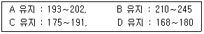

식품산업기사(구) (2005-03-20 기출문제)
1과목: 식품위생학
1. Clostridium botulinum 의 특성이 아닌 것은?
- 식중독의 원인이 된다.
- 편성호기성의 그램 음성균이다.
- 단백질의 분해력이 크다.
- 불충분하게 살균된 통조림속에 번식하는 간균이다.
(정답률: 알수없음)

2. 다음 식중독 물질 중 동물성 식품과 관계가 적은 것은?
- 삭시톡신(saxitoxin)
- 베네루핀(venerupin)
- 시큐톡신(cicutoxin)
- 테트로도톡신(tetrodotoxin)
(정답률: 알수없음)
3. 핵분열 생성물질로서 반감기는 짧으나 비교적 양이 많아서 식품오염에 문제가 될 수 있는 핵종은?
- Sr90
- I131
- Cs137
- Ru106
(정답률: 알수없음)
4. 수도물의 염소 소독 중 염소와 미량의 유기물질과의 반응으로 생성될 수 있는 발암성 물질은?
- Benzopyrene
- Nitrosoamine
- Halazone
- Trihalomethane
(정답률: 알수없음)
5. 쇠고기를 생식함으로써 감염될 수 있는 기생충은?
- 무구조충
- 갈고리촌충
- 구충
- 광절열두조충
(정답률: 알수없음)
6. 보존료의 사용목적과 가장 거리가 먼 것은?
- 수분감소의 방지
- 신선도 유지
- 식품의 영양가 보존
- 변질 및 부패방지
(정답률: 알수없음)
7. 이타이 이타이병과 관련이 깊은 중금속은?
- 카드뮴(Cd)
- 구리(Cu)
- 납(Pb)
- 수은(Hg)
(정답률: 알수없음)
8. 어떤 첨가물의 LD50의 값이 적다는 것은 다음 중 어느 것을 의미하는가?
- 독성이 적다.
- 독성이 크다.
- 안전성이 적다.
- 안전성이 크다.
(정답률: 알수없음)
9. 식품 위생검사시 생균수를 측정하는데 사용되는 것은?
- 표준한천평판배양기
- 젖당부용발효관
- BGLB 발효관
- SS 한천배양기
(정답률: 알수없음)
10. 합성수지 제품 중 포르말린(formalin)이 용출되어 식품 위생상 문제가 될 수 있는 것은?
- phenol 수지
- 염화비닐수지
- polyethylene
- polypropylene
(정답률: 알수없음)
11. 아메바성 이질의 예방대책에 속하는 것은?
- 예방접종을 받는다.
- 보균자의 식품취급을 막는다.
- 식품의 저온보존으로 충란의 증식을 막는다.
- 중간숙주인 육류를 가열하여 섭취한다.
(정답률: 알수없음)
12. 화학합성품의 심사에서 가장 중점을 두는 사항은?
- 함량
- 효력
- 안전성
- 영양가
(정답률: 알수없음)
13. 식품의 변패검사법 중 화학적 검사법이 아닌 것은?
- 휘발성 아민의 측정
- 어육의 단백질 침전반응 검사
- 과산화물가, 카르보닐가의 측정
- 경도 측정
(정답률: 알수없음)
14. 세균성 식중독 중 잠복기가 가장 짧은 것은?
- 포도상구균
- 장염비브리오균
- 대장균
- 살모넬라균
(정답률: 알수없음)
15. 손에 화농성 상처가 있는 사람이 만든 식품을 먹고 식중독이 발생했다면 다음 중 어느 균에 의해서 일어났을 가능성이 가장 많은가?
- 살모넬라균
- 보툴리누스균
- 포도상구균
- 장염비브리오균
(정답률: 알수없음)
16. 대장균 확정시험에 사용되지 않는 배지는?
- BGLB 배지
- EMB 배지
- Endo 배지
- Czapek-Dox 배지
(정답률: 알수없음)
17. 파리, 모기, 쥐 등은 질병을 전파하는 중요한 매개체 역할을 한다. 다음 중 파리의 전파와 가장 거리가 먼 것은?
- 장티푸스
- Q열
- 이질
- 콜레라
(정답률: 알수없음)
18. 황변미 중독 원인균과 독소의 연결이 바르게 된 것은?
- Aspergillus ochraceus － ochratoxin
- Penicillium citrinum － toxicarium
- Aspergillus flavus － rubratoxin
- Penicillium islandicum － citreoviridin
(정답률: 알수없음)
19. 야채, 과일류의 호흡 제한, 수분증발 방지로 보존성을 높이는 식품 첨가물은?
- 이형제
- 피막제
- 흡착제
- 알칼리제
(정답률: 알수없음)
20. 공장지대의 매연 및 훈연한 육제품 등에서 검출 분리되는 강력한 발암성 물질로 식품오염에 특히 주의하여야 하는 다환 방향족 탄화수소는?
- methionine sulfoximine
- polychlorobiphenyl
- nitroanillin
- benzopyrene
(정답률: 알수없음)
2과목: 식품화학
21. 단백질의 열변성에 영향을 주는 요인이 아닌 것은?
- 전기 음성도
- 온도
- 수소이온 농도
- 수분
(정답률: 알수없음)
22. 라이신(lysine)은 어떤 아미노산에 속하는가?
- 중성 아미노산
- 산성 아미노산
- 염기성 아미노산
- 함황 아미노산
(정답률: 알수없음)
23. 다음은 4가지 식용유지의 검화가이다. 이와 관련하여 옳게 설명된 것은?

- A유지를 구성하는 지방산의 평균 분자량이 가장 크다.
- B유지를 구성하는 지방산의 평균 분자량이 가장 크다.
- C유지를 구성하는 지방산의 평균 분자량이 가장 크다.
- D유지를 구성하는 지방산의 평균 분자량이 가장 크다.
(정답률: 알수없음)
24. 소수성 졸(sol)에 소량의 전해질을 넣으면 콜로이드 입자가 침전되는데 이 현상을 무엇이라 하는가?
- 브라운 운동
- 응결
- 흡착
- 유화
(정답률: 알수없음)
25. 딸기, 포도, 가지 등의 붉은 색이나 보라색이 가공, 저장 중 불안정하여 쉽게 갈색으로 변하는데 이 색소는?
- 엽록소
- 카로티노이드계 색소
- 플라보노이드계 색소
- 안토시아닌계 색소
(정답률: 알수없음)
26. 효소에 의한 갈변화 반응을 억제하는 방법으로 적당하지 못한 것은?
- 원료를 90℃에서 8초간 가열처리 한다.
- 산소와의 접촉을 피한다.
- pH를 6.0∼7.0 으로 유지해 준다.
- 온도를 -10℃ 이하로 낮춘다.
(정답률: 알수없음)
27. 밀감 통조림에서 백탁(白濁)의 원인이 되는 성분은?
- 나린진(naringin)
- 루티노스(rutinose)
- 헤스페리딘(hesperidin)
- 카로티노이드(carotenoid)
(정답률: 알수없음)
28. 전분의 노화에 영향을 미치는 인자가 아닌 것은?
- 전분의 종류
- amylose와 amylopectin의 함량
- 팽윤제의 사용
- 각종 유기 및 무기이온의 존재
(정답률: 알수없음)
29. 다음 실험방법 중 고분자화합물인 단백질과 가장 관련이 없는 것은?
- 원심분리
- 젤 크로마토그래피(gel chromatography)
- SDS 젤 전기영동
- 동결건조
(정답률: 알수없음)
30. 전분이 효소나 산에 의하여 가수분해될 때 나타나는 물질을 순서대로 나열한 것은?
- 전분 → 덱스트린 → 올리고당 → 맥아당 → 포도당
- 전분 → 올리고당 → 덱스트린 → 맥아당 → 포도당
- 전분 → 덱스트린 → 맥아당 → 올리고당 → 포도당
- 전분 → 올리고당 → 맥아당 → 덱스트린 → 포도당
(정답률: 알수없음)
31. 단당류의 광학이성체에 대한 설명 중 틀린 것은?
- 한 쌍의 광학이성체는 물리적·화학적 성질은 동일하나 편광면을 회전시키는 방향만이 다르다.
- 편광면을 우측으로 회전시키는 것을 우선성, 좌측으로 회전시키는 것을 좌선성이라 한다.
- 광학 활성물질의 용액은 시간의 경과와 더불어 선광도가 변화한다.
- 포도당은 좌선성, 과당은 우선성이다.
(정답률: 알수없음)
32. 비효소적 갈변 반응에 관여하지 않는 물질은 어느 것인가?
- 라이신(lysine)
- 글리신(glycine)
- 포도당(glucose)
- 레시틴(lecithin)
(정답률: 알수없음)
33. 거품에 대한 다음 설명 중 틀린 것은?
- 분산매가 액체이고 분산질이 기체인 교질용액의 일종이다.
- 탄산음료는 기포제를 함유하고 있지 않기 때문에 거품이 쉽게 없어진다.
- 식품가공 중 거품을 지우려면 표면장력을 감소시키면 된다.
- 액체와 기체만으로도 안정한 거품이 형성될 수 있다.
(정답률: 알수없음)
34. 고추의 매운 맛 성분은?
- 차비신(chavicine)
- 캡사이신(capsaicin)
- 카테콜(catechol)
- 갈산(gallic acid)
(정답률: 알수없음)
35. 불포화 지방산(unsaturated fatty acid)의 설명 중 틀린것은?
- 동물성 지방보다 식물성유에 함량이 더 많다.
- 포화 지방산 보다 일반적으로 융점이 높다.
- 수소를 첨가할 수 있다.
- 포화지방산보다 산패되기 쉽다.
(정답률: 알수없음)
36. 식품색소의 갈변에 효소가 관여하지 않는 것은?
- 양송이
- 홍차
- 간장
- 바나나
(정답률: 알수없음)
37. 유지의 자동산화에 의한 산패의 설명 중 틀린 것은?
- 초기에 산소가 불포화 지방산 분자의 이중결합에 직접 결합하여 개시된다.
- 초기단계에 열, 광선 및 금속 등에 의해 활성 유리라디칼(radical)이 생성된다.
- 중간단계에서 활성 유리 라디칼은 산소와 결합하여 과산화물과 새로운 유리 라디칼(radical)을 만든다.
- 과산화물은 분해되어 각종 카르보닐(carbonyl) 화합물을 만들고 중합체를 형성하기도 한다.
(정답률: 알수없음)
38. 지용성 비타민의 기능이 틀린 것은?
- 비타민(Vitamin) A - 로돕신(rhodopsin) 생성, 상피조직의 형성에 관여
- 비타민(Vitamin) D - 당질과 지질대사에 관여
- 비타민(Vitamin) E - 항산화작용, 생식기능에 관여
- 비타민(Vitamin) K - 혈액응고 작용
(정답률: 알수없음)
39. 맛에 대한 설명 중 옳은 것은?
- 글루타민산 소다에 소량의 핵산계 조미료를 가하면 감칠 맛이 강해진다.
- 설탕용액에 소금을 약간 가하면 단맛이 약해진다.
- 커피의 쓴맛은 설탕을 가하면 강해진다.
- 오렌지쥬스에 설탕을 가하면 신맛이 강해진다.
(정답률: 알수없음)
40. 유지의 산패가 발생할 때 나타나는 현상 중 가장 부적당한 것은?
- 유지의 산소흡수속도가 증가한다.
- 과산화물의 생성량은 증가하다가 감소한다.
- 카르보닐화합물의 생성량이 증가한다.
- 점성이 감소한다.
(정답률: 알수없음)
3과목: 식품가공학
41. 우유의 균질화(homogenization) 목적이 아닌 것은?
- 지방의 분리 방지
- 커드(curd)의 연화
- 미생물의 발육 억제
- 지방구의 미세화
(정답률: 알수없음)
42. 당화율(Dextrose equivalent)이란?
- [(고형분-포도당)/고형분]×100
- [(포도당-고형분)/고형분]×100
- (고형분/포도당)×100
- {[직접환원당(포도당)]/고형분}×100
(정답률: 알수없음)
43. 유지의 선택적 수소 첨가 반응시 니켈 촉매를 쓸 경우의 조건이 아닌 것은?
- 촉매량을 많게 한다.
- 압력을 낮게 한다.
- 온도를 높게 한다.
- 교반 속도를 빨리 한다.
(정답률: 알수없음)
44. 마요네즈 제조시 사용되는 난황의 역할은?
- 발포제
- 유화제
- 응고제
- 팽창제
(정답률: 알수없음)
45. 된장의 숙성은 된장 중에 있는 코지곰팡이, 효모, 세균 등의 상호작용으로 숙성이 진행되는데, 된장 재료 중의 전분과 단백질 성분이 분해, 발효되어 당분, 알콜, 유기산, 아미노산 등이 생성된다. 여기서 된장의 향기(냄새)는 주로 어떤 성분의 조화로 만들어지는가?
- 알콜과 유기산의 조화로 된장의 향기가 생긴다.
- 알콜과 당분의 조화로 된장의 향기가 생긴다.
- 당분과 아미노산의 조화로 된장의 향기가 생긴다.
- 당분과 유기산의 조화로 된장의 향기가 생긴다.
(정답률: 알수없음)
46. 육가공에서 염지(curing)의 목적과 관계 없는 것은?
- 제품에 소금맛을 가하여 방부성을 부여하기 위해
- 고기중의 색소를 변화시켜 탈색시키기 위해
- 미오신(myosin)등의 용해성을 높여 보수력, 결착성을 증가시키기 위해
- 고기를 숙성시켜 독특한 풍미를 갖도록 하기 위해
(정답률: 알수없음)
47. TRT(thermal reduction time)의 설명으로 가장 옳은 것은?
- 일정온도에서 생균수를 1/10로 감소시키는데 요하는 가열시간
- 일정온도에서 일정농도의 생균을 사멸시키는데 요하는 가열시간
- 일정온도에서 생균을 전부 사멸시키는데 요하는 가열시간
- 일정온도에서 생균을 10-n 까지 감소시키는데 요하는 가열시간
(정답률: 알수없음)
48. 버터 제조시 교동(churning)에 영향을 주는 요인과 거리가 먼 것은?
- 크림의 온도
- 교동기 회전수
- 크림의 식염함량
- 크림의 양
(정답률: 알수없음)
49. 치즈에 대한 설명으로 가장 적당한 것은?
- 치즈는 우유의 지방을 응고시켜 제조한다.
- 치즈는 우유의 단백질을 렌닛(rennet) 또는 젖산균으로 응고시켜 얻은 커드(curd)를 이용한다.
- 커드를 모은 후에 맛과 풍미를 좋게 하기 위하여 식염을 커드량의 5∼7% 첨가한다.
- 치즈 숙성시의 피막제는 호화전분을 사용한다.
(정답률: 알수없음)
50. 육제품의 훈연의 목적이 아닌 것은?
- 방부작용에 의한 저장성 증가
- 항산화작용에 의한 산화방지
- 훈연취 부여에 의한 풍미의 개선
- 훈연에 의한 수분증발로 육질이 질겨짐
(정답률: 알수없음)
51. 옥수수 전분 제조시 배아의 분리를 쉽게 하기 위하여 사용되는 것은?
- 황산
- 수산
- 질산
- 아황산
(정답률: 알수없음)
52. 두유가 무기염류에 의하여 응고되는 것은 콩의 어떤 성분 때문인가?
- 아스코르빈산
- 글루텐
- 미오신
- 글리시닌
(정답률: 알수없음)
53. 식빵 제조시 가스빼기의 목적이 아닌 것은?
- 발효과정 중 CO2 제거
- 효모의 활동력 증대
- 효모가 영양분과의 접촉으로 생활환경 개선
- 온도와 습도 유지로 풍미 향상
(정답률: 알수없음)
54. 다음 과실 중 후숙하는 사이에 climacteric rise를 볼 수 없는 것은?
- 사과
- 바나나
- 토마토
- 밀감
(정답률: 알수없음)
55. 유지의 탈검공정(degumming process)에서 주로 제거되는 성분은 ?
- 왁스(wax)
- 케톤(ketone)
- 알데히드(aldehyde)
- 인지질(phospholipid)
(정답률: 알수없음)
56. 삼투압 차이에 의하여 미생물 세포의 원형질 분리가 일어나 생육을 저지시키는 원리를 이용한 저장방법으로 연결된 것은?
- 염장법 - 당장법
- 염장법 - 산저장법
- 당장법 - 훈연법
- 건조법 - 가스저장법
(정답률: 알수없음)
57. 통조림 가열 살균 후 냉각효과에 해당되지 않는 것은?
- 호열성 세균의 발육방지
- 관내면 부식방지
- 스트루비트(struvite)의 생성방지
- 생산능률의 상승
(정답률: 알수없음)
58. 통배추김치의 제조공정으로 가장 적당한 것은?
- 배추다듬기 → 절임 → 세척 → 탈수 → 양념혼합
- 배추다듬기 → 절임 → 탈수 → 세척 → 양념혼합
- 배추다듬기 → 세척 → 탈수 → 절임 → 양념혼합
- 배추다듬기 → 반건조 → 세척 → 절임 → 양념혼합
(정답률: 알수없음)
59. 식품저장법 중 가열살균에 대한 설명으로 잘못된 것은?
- "D100 = 12" 의 표현은 온도 100℃로 처리해서 처음 균수의 90%가 죽는(또는 1/10로 감소) 시간을 측정했을 때 12분이 소요되었다는 의미이다.
- "F121 = 4.2" 의 표현은 어떤 일정 농도의 미생물을 121℃로 가열하면 4.2분 후에는 균이 전부 사멸된다는 의미이다.
- "Z = 10" 의 표현은 살균시간을 1/10로 단축시키려면 온도를 10℃(18℉)만큼 더 높여서 가열 처리해야 한다는 의미이다.
- "우퍼리제이션(uperization)" 이라 함은 75℃에서 15초동안 살균하는 고온단시간 살균법을 의미한다.
(정답률: 알수없음)
60. 토마토 가공에 대한 설명으로 바르게 설명되지 않은 것은?
- 토마토 중의 색소는 적색을 나타내는 리코펜(lycopene)과 황색을 나타내는 카로틴(carotene)이 중요한 색소이다.
- 토마토의 껍질과 씨를 제거한 과육과 즙액인 토마토 펄프를 농축한 것을 토마토 퓨레(puree)라 한다.
- 토마토 펄프의 농축은 가급적 저온에서 단시간 내에 해야한다.
- 토마토케첩을 담는 용기는 철과 구리로 만든 것이 좋다.
(정답률: 알수없음)
4과목: 식품미생물학
61. 막걸리의 주류 제조방법은?
- 단발효주
- 단행복 발효주
- 병행복 발효주
- 혼성주
(정답률: 알수없음)
62. 글루탐산(glutamic acid) 발효의 수율(收率)과 관계 깊은 물질은?
- 비오틴(biotin)
- 비타민 B12
- 숙신산(succinic acid)
- 구연산(citric acid)
(정답률: 알수없음)
63. 버섯의 구조 중 담자포자가 위치하는 곳은?
- 갓
- 주름
- 자루
- 각포
(정답률: 알수없음)
64. 감귤류의 변패에 가장 큰 영향을 미치는 미생물은?
- Rhizopus 속 곰팡이
- Bacillus 속 세균
- Penicillium 속 곰팡이
- Serratia 속 세균
(정답률: 알수없음)
65. 아황산펄프 폐액으로부터 균체를 배양하기에 가장 적합한 효모는?
- Candida utilis
- Candida tropicalis
- Candida albicans
- Candida versatilis
(정답률: 알수없음)
66. 탄소원으로 1mol의 포도당 배지에 정상형(Homo Type) 젖산균을 배양하여 젖산발효 하였을 때 생성되는 이론적인 젖산의 몰(mol)수는 얼마인가?
- 1
- 2
- 3
- 4
(정답률: 알수없음)
67. 세균의 세부구조에서 편모(flagella)의 기능은?
- 운동기관이다.
- 호흡기관이다.
- 세포내의 물질이동기관이다.
- 핵합성 기관이다.
(정답률: 알수없음)
68. 고량주용 누룩의 제조 원료는?
- 조, 수수를 주로 사용한다.
- 옥수수만을 주로 사용한다.
- 쌀과 보리를 주로 사용한다.
- 보리와 팥을 주로 사용한다.
(정답률: 알수없음)
69. 세균의 증식곡선에 대한 설명으로 잘못된 것은?
- 유도기에는 각종 효소단백질의 합성이 증가한다.
- 대수기에는 비교적 세포크기가 일정하다.
- 정지기를 유도하는 가장 주된 이유는 영양분의 고갈이다.
- 사멸기는 총균수와 생균수가 일치하는 시기이다.
(정답률: 알수없음)
70. β- carotene을 분비하므로 붉은 빵 곰팡이로도 불리우는 곰팡이는?
- Monascus 속
- Ashbya 속
- Neurospora 속
- Fusarium 속
(정답률: 알수없음)
71. 클로렐라 생산균주가 아닌 것은?
- Chlorella vulgaris
- Chlorella ellipsoidea
- Chlorella pyrenoidosa
- Chlorella spirulina
(정답률: 알수없음)
72. Clostridium 속 세균 중에서 단백질 분해력 보다 탄수화물 발효능이 더 큰 것은?
- Clostridium perfringens
- Clostridium botulinum
- Clostridium acetobutylicum
- Clostridium sporogenes
(정답률: 알수없음)
73. 효모의 일반적인 사용 용도가 아닌 것은?
- 단세포 단백질(single cell protein)의 제조
- 공업용 아밀라아제(amylase)의 제조
- 알콜 제조
- 핵산물질의 제조
(정답률: 알수없음)
74. 세균은 분류학상 어느 균류에 속하는가?
- 조균류
- 담자균류
- 진균류
- 분열균류
(정답률: 알수없음)
75. 산막효모의 특징이 아닌 것은?
- 액 표면에 피막을 형성한다.
- 위균사나 진균사를 형성한다.
- 양조 과정 중에 알콜을 생성한다.
- Hansenula 속이 해당된다.
(정답률: 알수없음)
76. 홍국을 만들어서 홍주를 양조하는 곰팡이는?
- Penicillium notatum
- Monascus purpureus
- Byssochlamys fulva
- Neurospora sitophila
(정답률: 알수없음)
77. 대장균에 대한 설명으로 옳은 것은?
- 비포자 형성균이다.
- 포자 형성균이다.
- 혐기성 구균이다.
- 호기성 나선균이다.
(정답률: 알수없음)
78. 육제품의 염지(curing)시 질산염 환원능이 강해 고기의 색깔에 영향을 주는 세균은?
- Micrococcus 속
- Lactobacillus 속
- Proteus 속
- Pseudomonas 속
(정답률: 알수없음)
79. 핵막을 가지고 있지 않은 미생물은?
- 세균
- 곰팡이
- 효모
- 버섯
(정답률: 알수없음)
80. 효모의 특징을 잘못 설명한 것은?
- Schizosaccharomyces 속 - 분열법으로 증식한다.
- Torulopsis 속 - 유지생산균이다.
- Candida 속 - 탄화수소를 자화시키는 효모가 많다.
- Debaryomyces 속 - 내염성 산막효모이다.
(정답률: 알수없음)